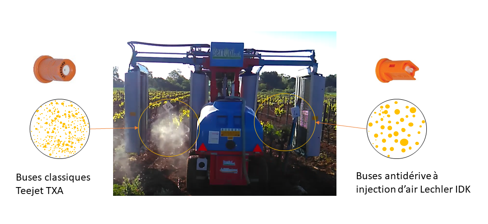

Utiliser des buses antidérive sur les pulvérisateurs à jet porté
| Intérêts environnementaux | Intérêts agronomiques | Contraintes de mise en oeuvre | Acceptabilité |
|---|---|---|---|
| Forte réduction de la dérive des produits phytosanitaires | L’utilisation de buses à injection d’air améliore les quantités de produit déposées sur la cible | Nettoyage du pulvérisateur rigoureux car les buses à injection d’air sont plus sensibles au bouchage. Utiliser les buses aux bonnes pressions pour générer des gouttes de taille optimale. | Simple à mettre en oeuvre, peu coûteux |
On distingue les buses classiques des buses à injection d’air, dites antidérive. Les buses à injection d’air génèrent des tailles de gouttes supérieures à celles obtenues avec des buses classiques. Les gouttes étant plus grosses, elles sont moins sensibles à la dérive.

Quelle efficacité sur la réduction de dérive ?
Les buses à injection d’air permettent de limiter la dérive de 50 à 90 % par rapport aux buses classiques. Elles entraînent une réduction significative de la dérive des produits lors des interventions sans baisse d’efficacité de la protection phytosanitaire.
Quels impacts agronomiques ?
L’utilisation de buses à injection d’air améliore les quantités de produit déposées sur la cible car les gouttelettes plus grosses sont moins sensibles à la dérive. En corollaire, la densité des impacts de gouttelettes sur la végétation peut être plus faible, surtout si le volume foliaire est important (cas des vignes étroites en particulier). Il faut conserver un volume de bouillie à l’hectare suffisant.
Les buses à chambre de décompression peuvent constituer un compromis intéressant, en produisant des gouttelettes de taille intermédiaire tout en réduisant la dérive.
Les gouttelettes produites par les buses antidérive étant plus grosses, il est nécessaire d’utiliser des volumes hectares suffisants pour ne pas dégrader la densité des impacts de gouttelettes sur la végétation. En vigne pleine végétation, on privilégiera un minimum de 200-250 L/ha
Bien utiliser les buses antidérives
Traiter en jet projeté en début de saison
Pour les tous premiers traitements en début de végétation, l’assistance d’air est inutile quand les diffuseurs sont positionnés à proximité de la végétation (en particulier dans le cas des pulvérisateurs face par face et panneaux récupérateurs) et peut générer de la dérive : couper la ventilation pour traiter en jet projeté.
Pulvériser à la bonne pression
Quel que soit le type de buses (classiques ou injection d’air), il est inutile d’utiliser les buses à des pressions trop élevées qui vont générer des gouttes trop petites qui vont partir en dérive. Dans ces conditions, une partie du produit n’atteint même pas la végétation.
Assurer un bon nettoyage de son pulvérisateur
Les buses à injection d’air sont plus sensibles au bouchage. Nettoyer régulièrement votre pulvérisateur et adapter la filtration avec au minimum un filtre d’aspiration et des filtres de tronçons. En cas de problèmes de bouchage, il est conseillé d’utiliser en plus des filtres de buses.
Après chaque journée de pulvérisation, démonter les buses et les filtres, les faire tremper dans de l’eau ou un produit et les remonter avant le traitement.
Vérifier l’état des buses et les changer si elles présentent des signes d’usure.
Pour aller plus loin
En pleine végétation, un panachage des buses est également possible si on souhaite conserver de fines gouttelettes en face de la zone fructifère. Les buses antidérive seront alors installées sur les diffuseurs supérieurs pour limiter le risque de dérive.
Ressources complémentaires
- Le projet Toops-Prowadis sur la réduction de la dérive
- Pourquoi et comment utiliser des buses antidérive ?
- Maîtrise de la dérive en pulvérisation